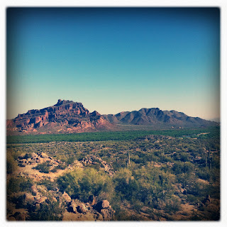

Recovered weblog entry
At least the view was nice

Went for a trail ride today with a few friends this morning. I discovered my ability to negotiate the trails has been slightly diminished. After a few rough patches, I decided to take a break and shoot what I saw. The desert really is beautiful in the spring. Lens: Tejas
Film: Ina's 1935